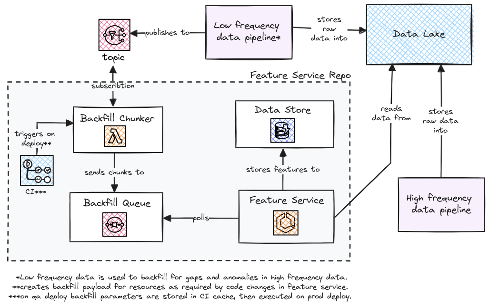
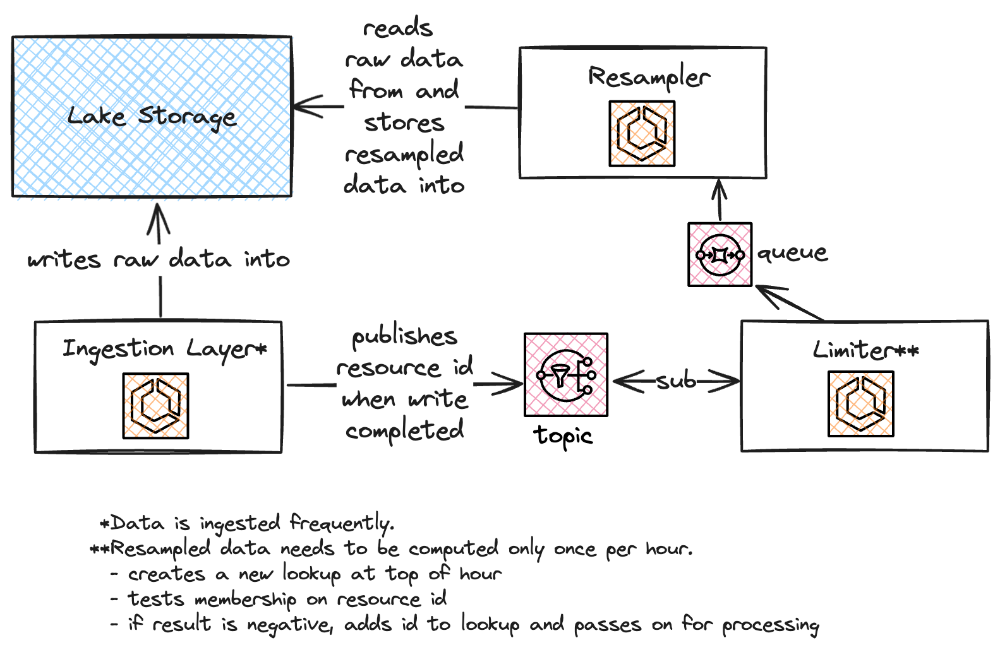
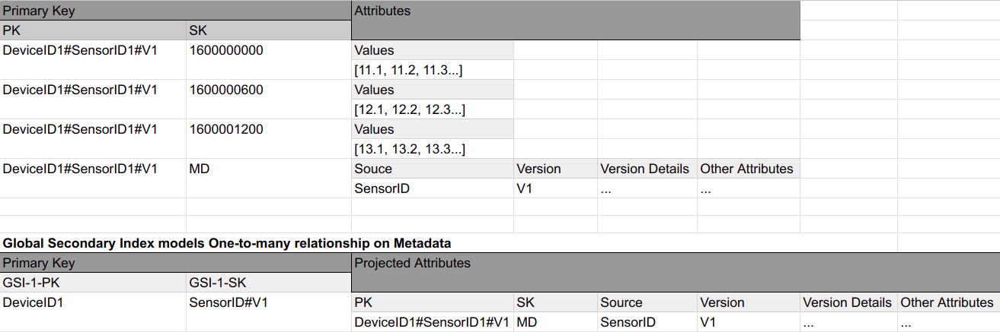

System Design
{kind=link}

This is a refactor of a system that had quite a long history and changing business requirements
had resulted in spaghetti code, code duplication in different components, and multiple ways of creating same domain objects.
This serverless event driven system used DynamoDB as event bus, and topics for triggering downstream services for object creation.
Some services used events and topics, some wrote directly to the database.
The issue that pushed for the rewrite arose from adding scheduled object creation. This led to building a completely
separate flow from the original flow, duplicating business logic and adding database calls and calls to a 3rd party API
each time the schedule was triggered.
A pure event-driven system was deemed too complex for the use case (especially with distributed rollbacks),
so we rather embraced the semi-monolithic nature. To bring clarity to the system, a shared library was written to unify
resource creation. Strategy pattern was used for resource creation based on payload. The interface was
implemented with pydantic for deserialization and serialization. Services now had a singular interface and one way of writing
objects to the database. Scheduled events were stored with a complete payload that could be directly committed to database.
All separate steps of creating resources were orchestrated in the shared library for simple error handling and rollbacks.
{kind=link}
This diagram describes a general design for a backfill system of a feature service that consumes data at two frequencies. Lower frequency data is less accurate but highly available and consistent. Higher frequency data has frequent outages and anomalies. Therefore the data needs to be backfilled regularly as low frequency data is ingested. Targeted backfills are also executed when there are code changes impacting transformations.
{kind=link}

Raw data is ingested frequently in batches and stored into the raw layer in the data lake.
Pre-processed (e.g. hourly resampled) data is stored into the clean layer.
Resampling might have been easily solved by scheduling the workload to run once per hour,
but resampling needs to be triggered as soon as data is available for two reasons:
1. Dashboards need the current hour's first data point as a "placeholder"
2. Data outages are frequent and resampled data should be made available as soon
as the data source is back online
Limiting could have been implemented in the resampler's code. This design has the additional
benefit of resampler's queue only containing items that need to be processed. Besides making
the architecture clearer, this simplifies debugging.
{kind=link}

DynamoDB is an excellent candidate for a timeseries data store of IoT data because of its horizontal
scalability and low-latency reads and writes, regardless of table size. However, data access patterns
need to be hashed out in advance since they are baked in the NoSQL data model.
For this use case the requirements were simple:
1. Fetch data over a time range for SensorID and data version.
2. Get all available metadata for a DeviceID or SensorID.
3. List all available sensors for a DeviceID.
4. List all data versions for a SensorID.
A secondary index is used to model a one-to-many relationship for metadata-to-data.
Metadata will always be identical for a device/sensor/version combination.